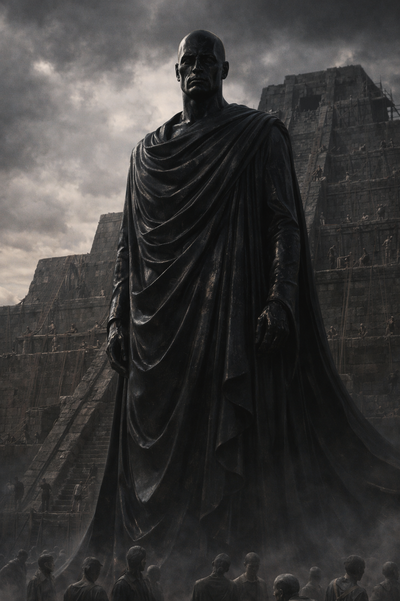

×

Авакутх
- Вид: Бог
- Пол: Мужской (антропоморфный)
- Статус: Неизвестен (вероятно, впал в вечный сон)
- Род занятий: Бог-хранитель, законодатель, «тюремщик»
- Первое появление: Глава 20
На данном сайте содержится информацию о произведении "От предвечной Тьмы к лунному Свету". Среди этой информации имеется большое количество сюжетных спойлеров.
«Свобода — это иллюзия. Есть только Путь. Следуйте ему — и будете спасены».
— Авакутх, из воспоминаний Йельшаса.
Авакутх — один из могущественных богов «серого мира», соплеменник Йельшаса. В истории своего мира он остался как противоречивая фигура: начав как защитник справедливости и покровитель слабых, он постепенно превратился в абсолютного тирана, чьё стремление к идеальному порядку привело к подавлению воли смертных и стагнации цивилизации.
Авакутх описывается как высокая, монументальная фигура, напоминающая статую из обсидиана. Он облачён в плотные иссиня-чёрные одежды, подчёркивающие его величие и суровость. Его облик излучает спокойную, непоколебимую власть.
В ранние эпохи Авакутх выступал как активный защитник угнетённых. В воспоминаниях Йельшаса сохранился эпизод, где бог вмешался в издевательства группы детей над сверстником из-за цвета кожи. Авакутх не просто прекратил насилие, он парализовал обидчиков и навсегда удалил их из мира, отправив в пещеры Теней на вечные страдания. После этого инцидента он установил Семь заповедей, обязательных для исполнения всеми гуманоидами.
Со временем стремление Авакутха к порядку переросло в тотальный контроль:
Йельшас характеризует позднего Авакутха не как хранителя, а как «тюремщика». Его правление привело к тому, что народ перестал развиваться, мечтать и спорить. Мир погрузился в безмолвие, где даже «ветер боялся играть листвой». Абсолютный контроль Авакутха стало одной из фундаментальных причин гибели цивилизации гуманоидов, превратив их мир в безжизненную пустыню.
Игорь Меркулов, просматривая воспоминания о боге, отметил, что методы Авакутха пугающе напоминают политику контроля и подавления, принятую во многих земных государствах. История Авакутха послужила Игорю важным уроком: он осознал, что навязанная сила и страх перед наказанием ведут не к процветанию, а к «автоматизации существования».